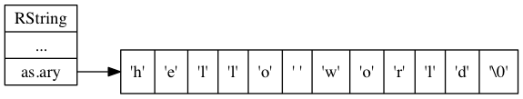
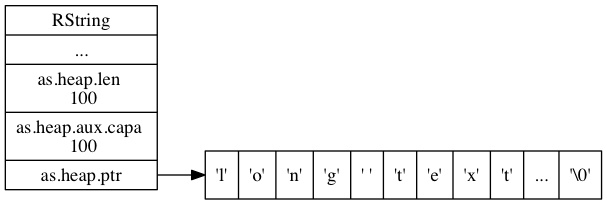

字符串对象 RString¶
本文将对 MRuby 中的 RString 对象的相关代码进行分析，
并对 RString 对象的三种底层实现进行介绍，
它们分别是嵌入式字符串、不定长字符串和共享字符串。
RString 对象¶
RString 结构是 MRuby 的字符串实现，
它的定义位于 /include/mruby/string.h ：
struct RString {
// 对象的文件头，记录了对象的类型、状态等信息
MRB_OBJECT_HEADER;
union {
struct {
// 缓冲区中保存的字符串长度
mrb_int len;
union {
// 缓冲区的大小
// 刚创建字符串对象时 capa 和 len 相同，
// 但之后如果对字符串对象进行 cat 等操作的话，
// MRuby 就会在缓冲区里面预留额外的空间，
// 用于减少执行内存分配的次数
mrb_int capa;
// 共享字符串（这是被多个对象所共享的部分）
struct mrb_shared_string *shared;
} aux;
// 字符串缓冲区
char *ptr;
} heap;
// 长度受限的嵌入式字符
char ary[RSTRING_EMBED_LEN_MAX + 1];
} as;
};
对象头¶
RString 包含一个 MRB_OBJECT_HEADER 常量定义，
这个常量定义了每个对象共有的属性，
该常量的定义位于 /include/mruby/value.h ：
#define MRB_OBJECT_HEADER \
enum mrb_vtype tt:8;\
uint32_t color:3;\
uint32_t flags:21;\
struct RClass *c;\
struct RBasic *gcnext
MRB_OBJECT_HEADER 常量里面定义的属性当中，
目前对我们需要知道的是 tt 属性和 flags 属性：
tt属性记录了对象的类型，它的值可以是/include/mruby/value.h/mrb_vtype枚举中列出的任意一个常量。对于字符串对象来说，它的tt属性的值为枚举中的MRB_TT_STRING常量：enum mrb_vtype { MRB_TT_FALSE = 1, /* 1 */ MRB_TT_FREE, /* 2 */ // ... MRB_TT_STRING, /* 17 */ // ... MRB_TT_FIBER, /* 23 */ MRB_TT_MAXDEFINE /* 24 */ };
flags属性记录了对象的状态，以及对象的底层实现方式。对于字符串对象来说，flags属性的值可以是/include/mruby/string.h里面的五个MRB_STR_*常量的其中一个：// 共享字符串 #define MRB_STR_SHARED 1 // 非释放共享字符串 #define MRB_STR_NOFREE 2 // 嵌入字符串 #define MRB_STR_EMBED 4 // 嵌入字符串的长度计算掩码（mask） #define MRB_STR_EMBED_LEN_MASK 0xf8 // 嵌入字符串的长度计算偏移位 #define MRB_STR_EMBED_LEN_SHIFT 3
长度受限的嵌入式字符串¶
除了 MRB_OBJECT_HEADER 常量定义的属性之外，
RString 结构的定义只包含一个 as 联合，
这个联合分别包含一个 heap 结构和一个 ary 字符数组：
struct RString {
// ...
union {
struct {
// ...
} heap;
// 长度受限的嵌入式字符串
char ary[RSTRING_EMBED_LEN_MAX + 1];
} as;
};
其中 ary 数组的长度是受限的，
MRuby 会根据机器的位长度来决定这个数组的最大长度：
// 嵌入字符串的最大长度，实际长度为三个指针的长度减去一个字节：
// 以 64 位机器为例， 8 bytes * 3 - 1 byte = 23 bytes 。
// 以 32 位机器为例， 4 bytes * 3 - 1 byte = 11 bytes 。
#define RSTRING_EMBED_LEN_MAX ((mrb_int)(sizeof(void*) * 3 - 1))
对性能敏感的读者可能会对 ary 数组感到担心：
因为 as 联合里面并没有一个属性来记录 ary 数组的长度，
那么在使用 ary 数组时，
程序是否需要对 ary 数组进行 O(N) 复杂度的遍历来计算 ary 数组的长度呢？
答案是不必的，
因为 MRuby 已经帮我们解决了这个问题 ——
当 RString 使用 ary 数组时，
RString 会将字符串的长度通过二进制位操作记录到 flags 标识里面，
所以获取 ary 数组的长度的复杂度仍然为 O(1) 。
string.c 里面的 STR_SET_EMBED_LEN 宏清楚地定义了对 ary 数组的长度设置操作：
#define MRB_STR_EMBED_LEN_MASK 0xf8
#define MRB_STR_EMBED_LEN_SHIFT 3
#define STR_SET_EMBED_LEN(s, n) do {\
size_t tmp_n = (n);\
s->flags &= ~MRB_STR_EMBED_LEN_MASK;\
s->flags |= (tmp_n) << MRB_STR_EMBED_LEN_SHIFT;\
} while (0)
作为例子，
下图展示了一个长度为 11 字节，
保存了字符串 "hello world" 的嵌入字符串：

不定长字符串¶
ary 的性质确定了它只能用来保存一些比较短的字符串，
而当 MRuby 需要保存一些比较长的字符串时，
它就会使用 as 联合的 heap 结构，
该结构和常见的字符串实现非常相似：
struct RString {
// ...
union {
struct {
// 缓冲区中保存的字符串长度
mrb_int len;
union {
// 缓冲区的大小
// 刚创建字符串对象时 capa 和 len 相同，
// 但之后如果对字符串对象进行 cat 等操作的话，
// MRuby 就会在缓冲区里面预留额外的空间，
// 用于减少执行内存分配的次数
mrb_int capa;
// 共享字符串（这是被多个对象所共享的部分）
struct mrb_shared_string *shared;
} aux;
// 字符串缓冲区
char *ptr;
} heap;
// ...
} as;
};
了解不定长字符串的一个不错的办法是阅读 string.c/str_new 函数的定义，
这个函数接受一个长度为 len 的字符串 p ，
并创建一个包含相同字符串内容的字符串对象：
static struct RString*
str_new(mrb_state *mrb, const char *p, size_t len)
{
struct RString *s;
// 为新的字符串对象分配内存
s = mrb_obj_alloc_string(mrb);
// 如果输入字符串的长度小于 RSTRING_EMBED_LEN_MAX
// 那么创建一个嵌入字符串，否则的话就创建一个不定长字符串
if (len < RSTRING_EMBED_LEN_MAX) {
// 创建嵌入字符串
STR_SET_EMBED_FLAG(s);
STR_SET_EMBED_LEN(s,len);
if (p) {
memcpy(s->as.ary, p, len);
}
} else {
// 创建不定长字符串
if (len >= MRB_INT_MAX) {
mrb_raise(mrb, E_ARGUMENT_ERROR, "string size too big");
}
s->as.heap.len = len;
s->as.heap.aux.capa = len;
s->as.heap.ptr = (char *)mrb_malloc(mrb, len+1);
if (p) {
memcpy(s->as.heap.ptr, p, len);
}
}
// 在字符串的末尾添加空字符
STR_PTR(s)[len] = '\0';
// 返回新创建的字符串对象
return s;
}
如代码所示，
str_new 函数会根据 len 的大小来判断应该创建嵌入字符串还是不定长字符串。
下图展示了一个不定长字符串对象示例：

共享字符串¶
假设现在有一个字符串对象 orig ：
mirb - Embeddable Interactive Ruby Shell
> orig = "hello world"
=> "hello world"
这个字符串对象指向一个包含 11 个字符的缓冲区，
如下图所示（结尾的空字符不计算在字符串长度之内，下同）：
orig --> | 'h' | 'e' | 'l' | 'l' | 'o' | ' ' | 'w' | 'o' | 'r' | 'l' | 'd' | '\0' |
如果这时用户对 orig 执行以下操作：
> after = orig.slice(0,5)
=> "hello"
> after
=> "hello"
那么实现这个 slice 操作的方法可能是这样的：
- 为
after新创建一个字符串对象， 并为这个字符串对象分配缓冲区； - 将
orig对象的缓冲区里面， 索引从0到5为止的内容"hello"复制到after对象的缓冲区里面；
slice 操作执行之后的两个对象如下图所示：
orig --> | 'h' | 'e' | 'l' | 'l' | 'o' | ' ' | 'w' | 'o' | 'r' | 'l' | 'd' | '\0' |
after --> | 'h' | 'e' | 'l' | 'l' | 'o' | '\0' |
上面给出的 slice 实现是可行的，
但并不是最优化的：
- 因为
after保存的字符串只是orig保存的字符串的一个子集， 所以slice实际上可以将orig的缓冲区共享给after使用， 然后让orig和after分别使用缓冲区的不同部分就可以了； - 共享缓冲区的做法可以避免为了创建
after的缓冲区而执行内存分配操作， 并且after对象也无须再从orig对象那里复制"hello"字符串了。
使用新方法实现的 slice 操作所创建的 orig 对象和 after 对象如下图所示：
orig
+-----------------------------------------------------------+
| |
| |
| start end |
v v
shared
buffer --> | 'h' | 'e' | 'l' | 'l' | 'o' | ' ' | 'w' | 'o' | 'r' | 'l' | 'd' | '\0' |
^ ^
| start | end
| |
| |
+-----------------------+
after
共享字符串就是 MRuby 为了优化类似 slice 这样的操作而设置的，
这种数据结构的实现原理和上面共享缓冲区一样，
只是细节上面更具体了。
使用共享字符串需要用到 RString 对象中的 shared 属性：
共享字符串的实现和性
实现共享字符串的关键是 RString 对象中的 shared 属性，
它和上面所说的“缓冲区”一样，会被多个字符串对象所共享：
struct RString {
// ...
union {
struct {
// ...
union {
// ...
// 共享字符串（这是被多个对象所共享的部分）
struct mrb_shared_string *shared;
} aux;
// ...
} heap;
// ...
} as;
};
mrb_shared_string 结构的定义位于 string.c ：
typedef struct mrb_shared_string {
// 在引用计数为 0 时，是否释放 ptr 指针所指向的内容
// 值为 1 时不释放， 0 时释放
mrb_bool nofree : 1;
// 共享字符串的引用计数器
int refcnt;
// 缓冲区，保存着共享字符串的内容
char *ptr;
// 内容的长度
mrb_int len;
} mrb_shared_string;
作为例子，
下图展示了在 MRuby 中，
before 对象和 after 对象共享同一个 mrb_shared_string 结构的样子：
![digraph {
rankdir = LR;
node [shape = plaintext]
before;
after;
node [shape = record]
before_RString [label = " <head> RString | ... | as.heap.len \n 11 | <shared> as.heap.aux.shared | <ptr> as.heap.ptr "];
after_RString [label = " <head> RString | ... | as.heap.len \n 5 | <shared> as.heap.aux.shared | <ptr> as.heap.ptr "];
mrb_shared_string [label = " <head> mrb_shared_string | ... | refcnt \n 2 | <ptr> ptr | len \n 11 "];
buffer [label = " { <0> 'h' | 'e' | 'l' | 'l' | <4> 'o' | ' ' | 'w' | 'o' | 'r' | 'l' | <10> 'd' | '\\0' } "];
//
before -> before_RString:head;
after -> after_RString:head;
before_RString:shared -> mrb_shared_string:head;
after_RString:shared -> mrb_shared_string:head;
mrb_shared_string:ptr -> buffer:0;
before_RString:ptr -> buffer:0;
after_RString:ptr -> buffer:0;
}](../../_images/graphviz-b2c6b3ffcfcd251e9f6706b0cc0b9e86d66a0017.png)
在这个图里面：
before对象的RString.ptr指向缓冲区的索引0， 而RString.len的值为11， 这表示程序只要从RString.ptr所指示的索引开始， 读入11个字符， 就得到了before对象的值"hello world"；- 与此类似，
after对象的RString.ptr也指向缓冲区的索引0， 但它的RString.len的值为5， 这表示程序只要从RString.ptr所指示的索引开始， 读入5个字符， 就得到了after对象的值"hello"； - 另外，
mrb_shared_string.refcnt的值为2， 表示这个mrb_shared_string结构正在被两个对象所共享。
真是相当聪明的做法！